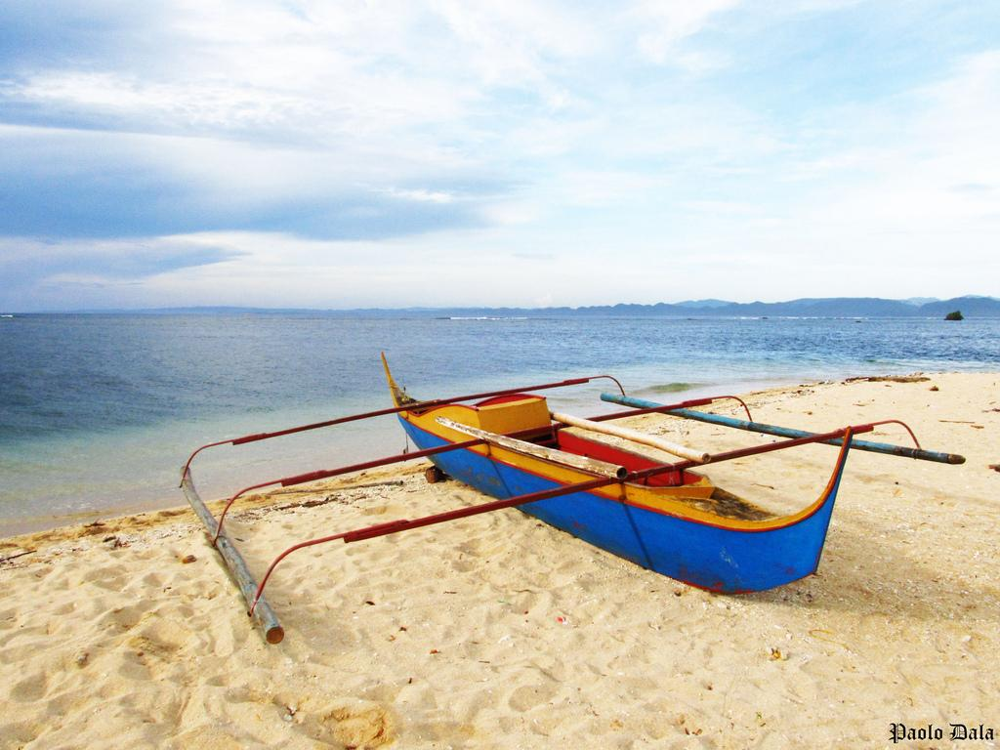
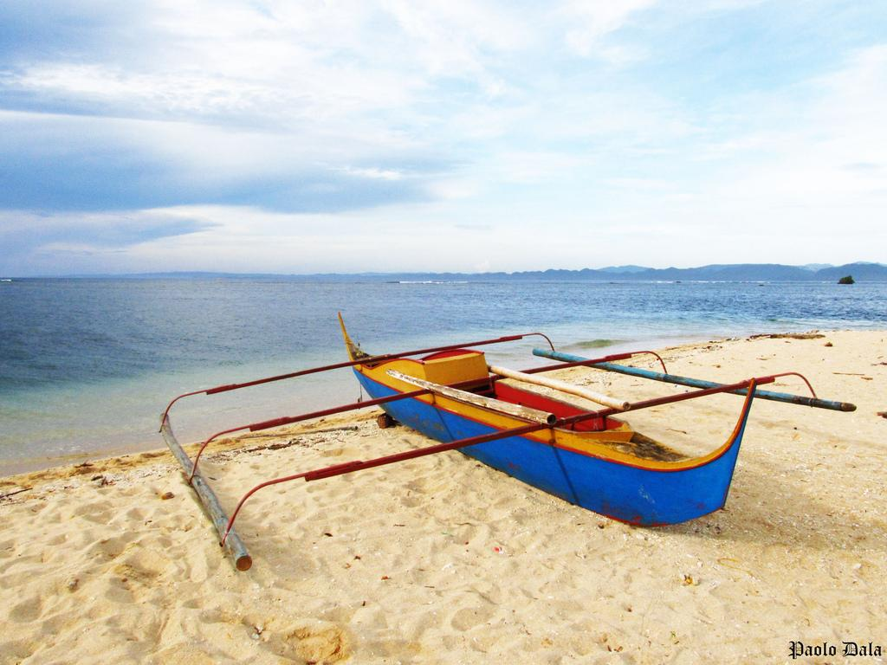

Top 5 Destinations By Regions
Bulabog Beach in Western visayas

Bulabog Beach - This is the 2.5km long water sports beach of Boracay, and is located on the east side of the island. From November to April, Bulabog Beach is the kite boarding and windsurfing heart of Boracay. From May to October, it is the water sports centre of Boracay. It is a 5- minute walk to D’Mall, 10 minutes to White Beach.
There are some fantastic resorts and hotels that take advantage of this unique beach community. The beach is protected by an offshore reef.
It is less developed and the Boracay hotels here are usually quieter than those on White Beach. Bulabog has earned the title: “Number One kite boarding beach in Asia.” See more in Bulabog Beach
Virgin Island in Central Visayas

Virgin Island - It is no debate that Bantayan Island is a world-renowned beach destination in Cebu. It has one of the most amazing pristine white sand beaches in the Philippines with so many beautiful attractions you can tour around the island. And there is this little island nearby that became very popular because of “word of mouth”.
A 30-minute boat ride from Bantayan Island, Virgin Island is one of the main attractions in Bantayan Island that has an untouched white beach and crystal-clear waters where snorkeling can be enjoyed.
Though more expensive than usual and may not be ideal for budget-conscious travelers (see rates below), Virgin Island is private and maintained in good conditions. It is perfect for tourists who really have the heart for beaches and those who want to just chill and relax. The island also has cottages that you can rent price would depend on the type of cottage you would like to rent. There are hammocks which are free. And there is a local restaurant bar so you can have a meal or a drink. See more in Virgin Island
Divinubo Island in Eastern Region
 

Divinubo Island - Borongan is a growing city in Eastern Samar but what also makes it great is that it can be the gateway to beautiful destinations in the province.
One of the beaches that locals go to is Divinubo Island.
From Borongan City, you will have to get to Barangay Lalawigan and ride a short boat trip to the islands.The Island has cottages, toilets and small private resorts. Divinubo faces the Pacific Ocean. It also boasts its white sand beach and tall rock formations. If you are feeling more adventurous, you can climb the rocks and jump into the ocean. See more in Divinubo Island